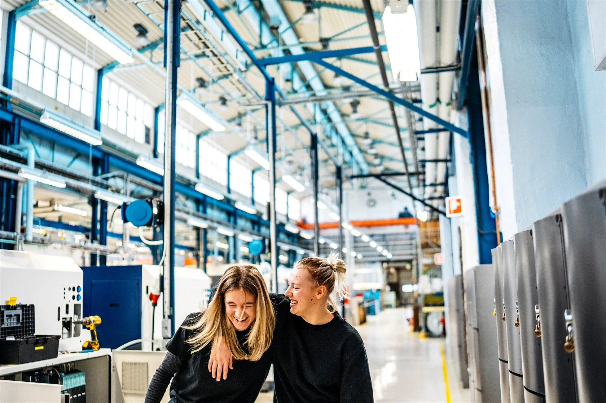

Är du nyfiken på hur saker fungerar och gillar att hitta nya lösningar? Tycker du om att utveckla idéer och har ett intresse för entreprenörskap? Då kan teknikprogrammet vara ett bra val för dig. Teknik spelar en avgörande roll i dagens och framtidens samhälle, vilket gör att möjligheterna efter utbildningen är mycket goda. Genom vårt samarbete med det lokala näringslivet via Teknikcollege får du dessutom värdefulla kontakter och en utbildning som är anpassad efter branschens behov.
Programmet passar dig som gillar problemlösning och teknikutveckling. Här får du en inblick i entreprenörskap, teknikutveckling och de tekniska konstruktioner som löser många av våra vardagsproblem. Om du är nyfiken och gillar ämnen som natur, teknik och matematik är teknikprogrammet något för dig! Programmet är högskoleförberedande och det finns många olika vägar framåt för vidare studier.
Teknikcollege på Furulundsgymnasiet i Sölvesborg är ett sätt att gå gymnasiet där utbildningen är anpassad efter vad företag vill ha för kunskaper. Det görs i samarbete med lokala företag så att det du lär dig faktiskt passar arbetsmarknaden. Du kan läsa det på El- och energiprogrammet, Industritekniska programmet eller Teknikprogrammet. Under utbildningen får du både teori och mycket praktik, till exempel projekt, praktikplatser och kontakt med företag. När du är klar får du inte bara gymnasiebetyg utan också ett särskilt Teknikcollege-diplom som visar att du har en extra yrkesinriktad och kvalitetssäkrad utbildning. Det gör det lättare att få jobb eller gå vidare till studier, och du får även chans att jobba med modern teknik och bygga viktiga kontakter inför framtiden.
